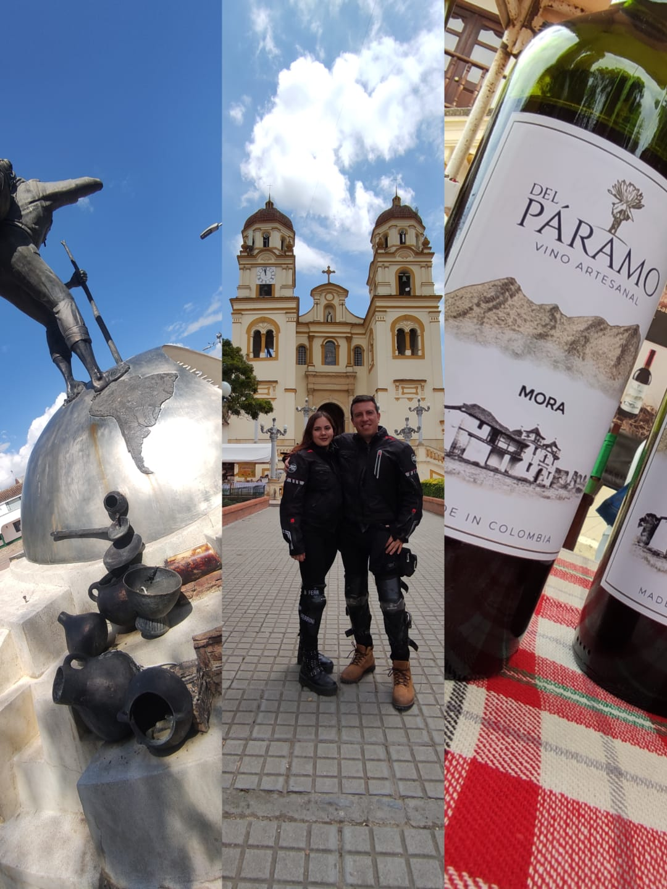

Sobre el valle de Saravita, en un panorama de colinas de flancos ondulosos y ese bosque encantado de Terebinto, se levanta una ciudad sencilla y hospitalaria, con muchos caserones coloniales: Chiquinquirá.Su nombre significa puebro sacerdotal, lugar de adoración a los dioses; hoy se conoce como la Capital Religiosa de Colombia, famosa por sus romerías a la Virgen del Rosario, nombrada la patrona de la nación.
| LUGAR | Guatavita | Villa de Leiva | Chiquinquira |
|---|---|---|---|
| º VISITAS | 3.000 | 5.000 | 10.000 |